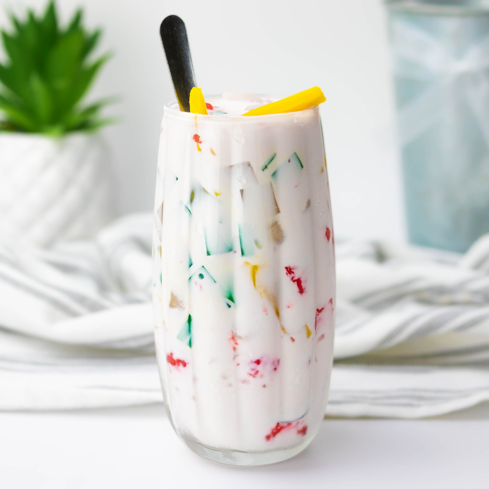

Behold! Vietnamese recipes that I may or may not know how to actually make!
Don't worry. I learned and wrote down all of this from my grandma. So you know it's at least a bit accurate. When I moved out for the first time (technically), I always found myself craving Vietnamese food like I always had back home. Who knew I had it so easy! Well, each time I had a craving, I would call my grandma and ask for the recipe. She would tell me the ingredients I needed and the step by step process. The hard part was figuring out what she meant by these measurements.
The other hard part was actually doing the cooking myself! Again, who knew I had it so easy back home! Cooking, especially as someone who isn't that familiar with the prep work, can be a long process. But it sure does produce some yummy stuff!
I hope my grandma's Vietnamese recipes makes you feel right at home!